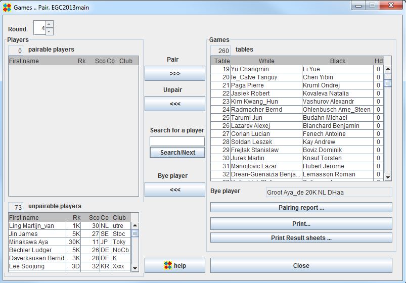

Games Pair frame

All players appear in this frame.
Players declared as not participating in the current round are in the "unpairable players" list
Players already paired appear in the Games list
The bye player, if exists, appear below the Games List. Only one player can be bye player for a given round.
The remaining players appear in the "pairable players" list.
Automatic pairing
Click on the Pair button.
If the number of players is uneven, you will be asked to choose a bye player or to let OpenGotha choose it.
The pairing process will move players from the Players list to the Games list.
Manual pairing
Select players
To select one player, just click on this player. To select 2 or more players, use Shift+click, Ctrl+Click and/or Ctrl+Shift+Click
You can pair a couple of players by selecting them in the pairable players list and click on Pair Button
You can pair a set of players in a semi-automatic way by selecting desired players and click on Pair Button
As a help for manual pairing, when a unique player is selected, a list of previous games of that player is displayed.
Unpairing
You can unpair some or all games by selecting games and clicking on the Unpair Button.
Modify a game
You can modify the colour/handicap of a given game by selecting that game, right-clicking and choosing "Exchange Colours" or "Modify handicap".
Change table numbers
Table numbers are chosen by OpenGotha according to availability.
You can renumber them according to MMS order by right click and choose "Renumber table by MMS"
You can change a given table number by selecting that game, right click, choose "Change table number", then enter a new number.
If necessary, OpenGotha will automatically renumber the game previously assigned to the target table.
In some tournaments, you may happen to use different rooms with table numbers starting from a number other than 1. For instance, the available tables willl be tables 25-48, tables 156-234, etc.
To do that, select a table, right click, choose "Shift tables" and a new table number for the selected game. Subsequent table numbers will be shifted as well. However, table numbering should remain inside 1 to 600 limits.
Pairing report
The Pairing report provides informations relevant to the tournament organizer :
- Paired players who had not shown up in previous round
- Pairs with a non zero MMS difference
- Pairs with a big handicap
- Intra-club and intra-country pairs
- Unbalanced Drawn up/down players
- White/Black unbalanced players

Result sheets
You can print result sheets.
2 sheets per page are printed